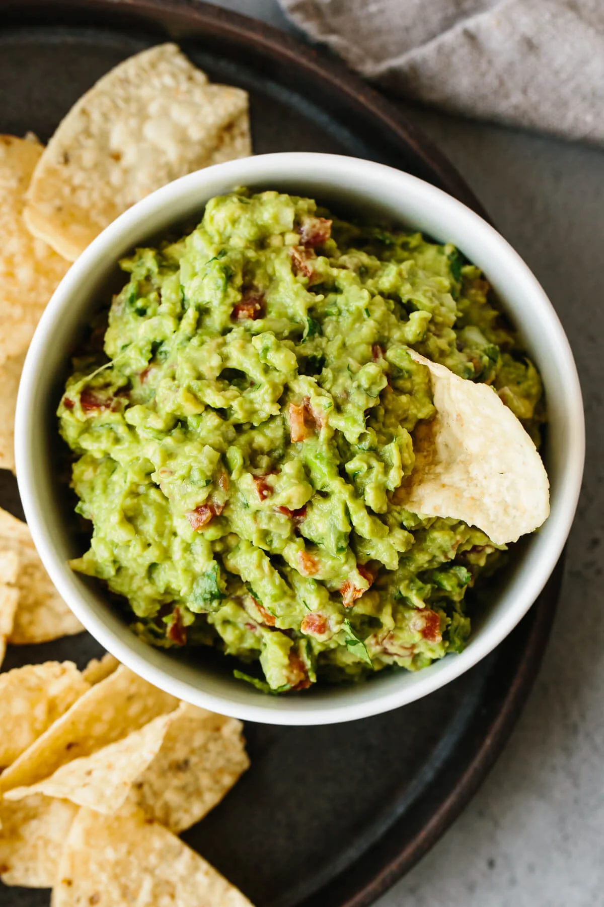

Guacamole

Description
I’m not one for hyperbole, but this really is the best guacamole recipe. When it comes to crowd-raving guacamole the key is to not get too fancy or try to be too unique. Guacamole is meant to be easy to make and delicious. Plain and simple. It’s a blend of a few high quality ingredients with flavors that meld together beautifully.
After numerous trips to Mexico and working alongside Mexican chefs, I can confirm that this guacamole is the real deal. Fresh, easy, and authentic! Just as you would enjoy it in Mexico.
Ingredients
- Salt
- 3 avocados, ripe
- ½ small yellow onion, finely diced
- 2 Roma tomatoes, diced
- 3 tablespoons finely chopped fresh cilantro
- 1 jalapeno pepper, seeds removed and finely diced
- 2 garlic cloves, minced
- 1 lime, juiced
- ½ teaspoon sea salt
Steps
- Slice the avocados in half, remove the pit, and scoop into a mixing bowl.
- Mash the avocado with a fork and make it as chunky or smooth as you’d like.
- Add the remaining ingredients and stir together. Give it a taste test and add a pinch more salt or lime juice if needed.
- Serve the guacamole with tortilla chips.